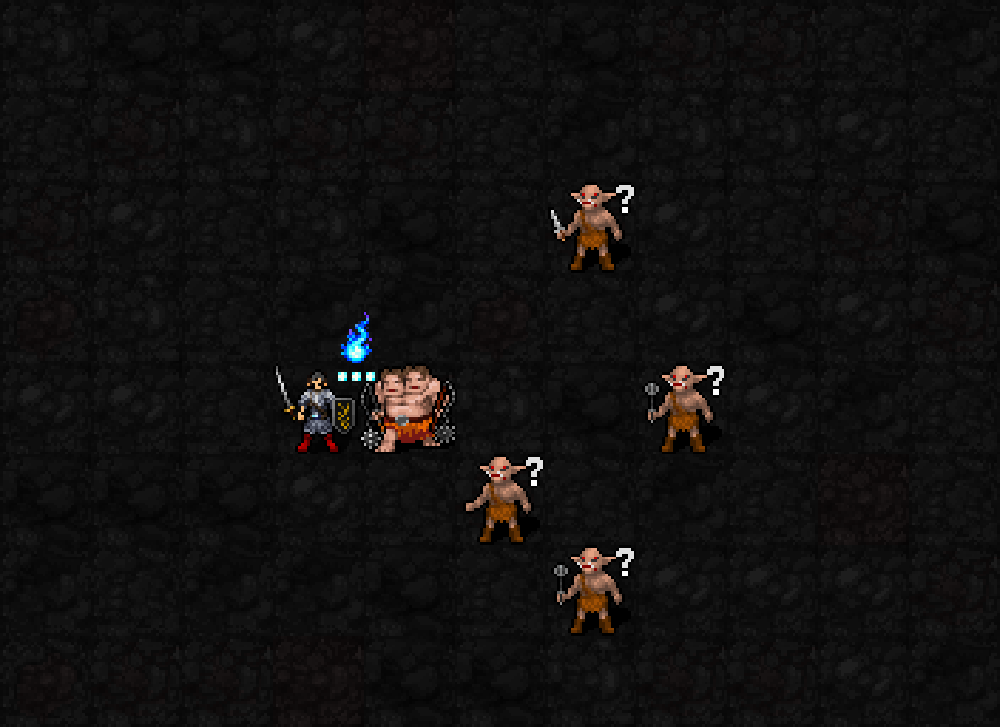
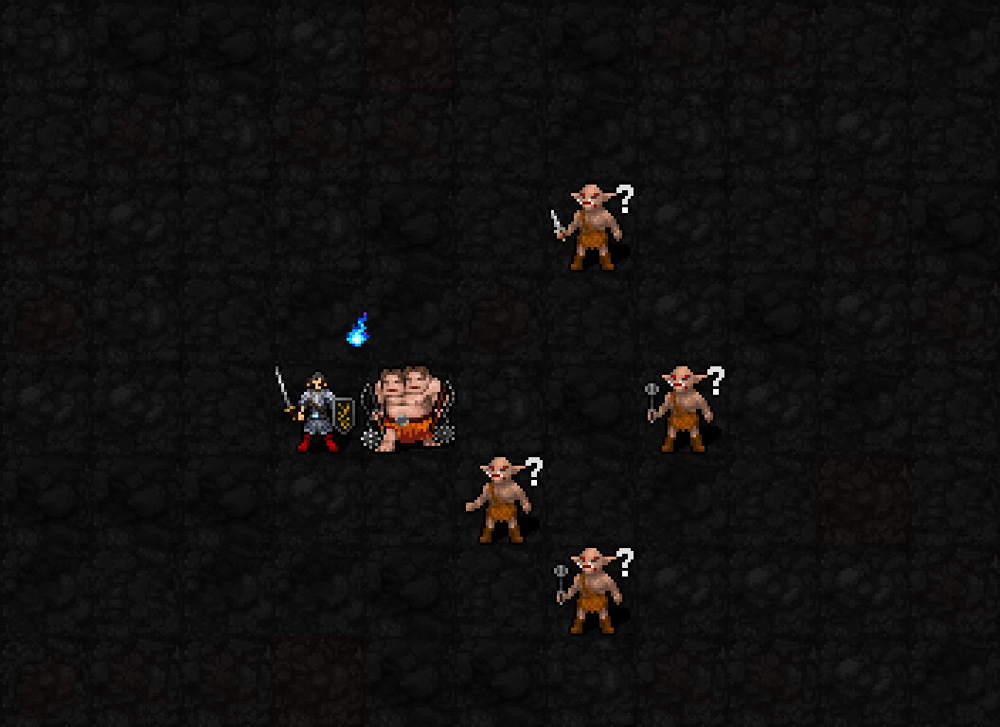

신앙75 해금 / 최소 기도술 제한 없음 / MP3·신앙3·1턴
행동 완료 후3턴 재사용 대기. 열기0도 사용 가능

시전자 앞에서1칸→3칸→5칸 폭으로 퍼지는 길이3의 부채꼴. 이번 초안은 오른쪽 방향, 총9칸입니다. 불줄기는 몹 아래에, 실제 범위 안 몹의 타격 섬광은 몸통 위에 잠깐 표시합니다. 오른쪽4칸 몹은 범위 밖 대조입니다.

열기가 없어도 같은 범위를 공격합니다. 불줄기 크기로 강도를 구분하며 열기3개 영상에서는 본인 표식의3불씨가0개로 바뀝니다.
| 항목 | 효과 |
|---|---|
| 범위 | 인접8방향 중 선택,길이3·폭1/3/5. 벽·사선에 막힌 칸 제외,자신·아군 피해 없음. 이 외형 검사는 오른쪽만 포함 |
| 피해 | 불씨H 전부소모,2d(6+⌊I/3⌋)+8H 순수화염. 필중·AC무시·rF적용 |
| I12 | H0:평균11 / H1:19 / H2:27 / H3:35 (저항 적용 전) |
| 불씨 반격 | 1성 추가타 중복 없음. 이번 역분사가 자기 불씨를 다시 만들지 않음 |
| 소화 | 범위의 일반 화염구름 제거. 유효 적원천 화염구름을 실제 제거하면 새불씨1개,발동당최대1·원천별 획득상한 적용. 이번 피해에 소급하지 않음 |
| 제외 | 독·냉기·증기·지옥불·용암 제거 없음. 적의 몸에 붙은 점착화염 소화 없음 |
실제 SDL 렌더러에 불씨 소모·부채꼴·타격 외형을 준비해 촬영한 미리보기입니다. GIF에서 실제피해·열기소모·구름소화는 실행하지 않았습니다.3불씨수치안은 승인됐지만 실제 전투는 아직 기존6열기규칙이며 새이펙트도 전투콜백 미연결입니다. 일반실행본su-five01유지. 오른쪽범위1/4/9칸·자신/범위밖제외·월드/RNG보존·22신/저장복원통과.
불줄기 원화는built-in imagegen 생성,32px 개별타일로 배치했습니다. 열기0과3의 최대폭20/28px,몹 타격은 확정된1성 불씨폭발 도트를 재사용합니다.